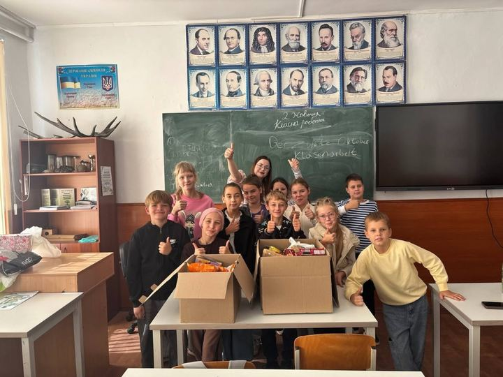
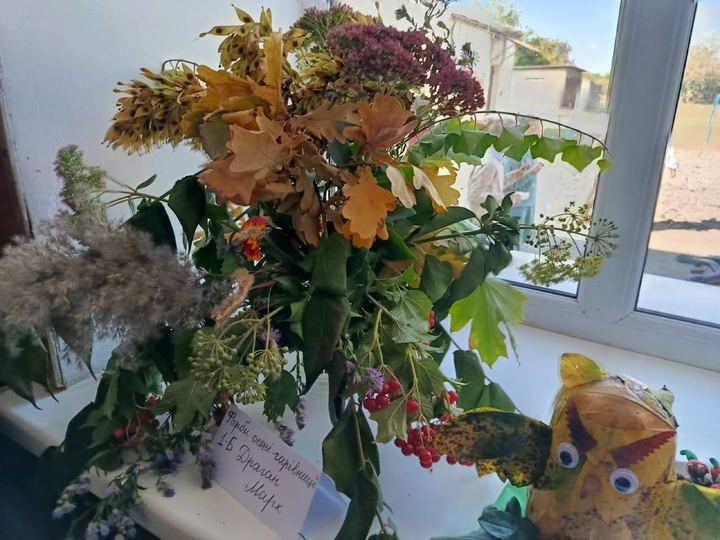
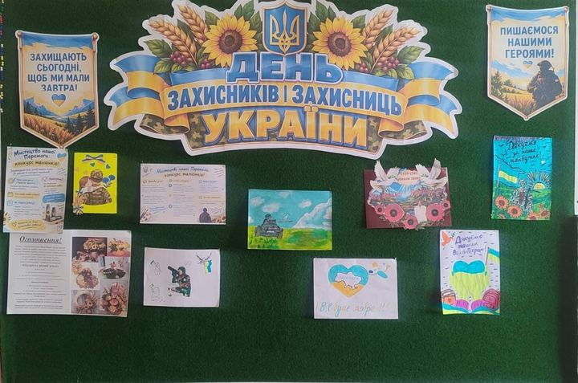
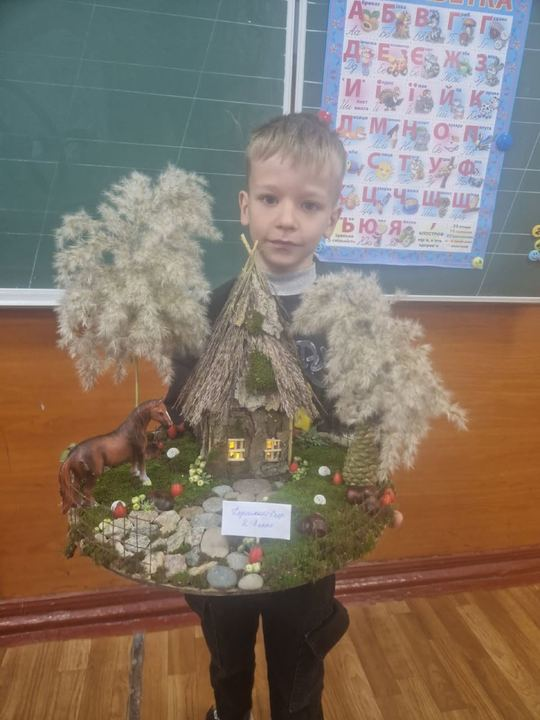
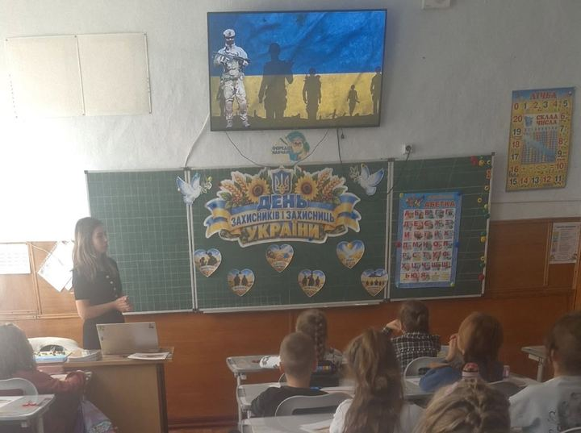
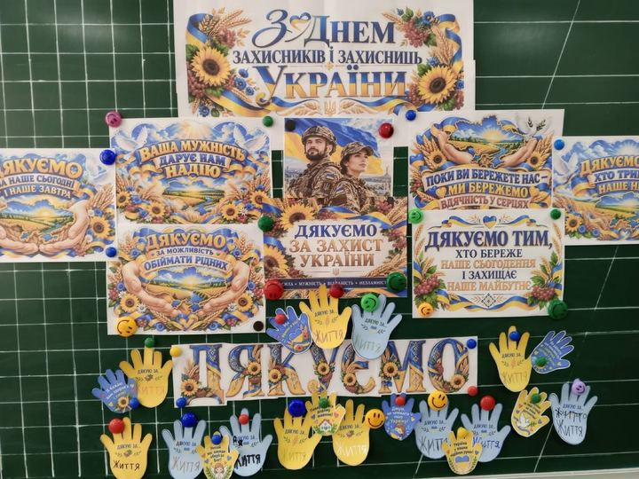

Життя ліцею
Події, оголошення й досягнення ліцею. Дописи переносимо зі спільноти ліцею у Facebook.
-

Життя ліцеюУчні 5-А класу Біляївського ліцею 2 долучилися до доброї та важливої справи - зібрали продукти й… - Життя ліцеюДорога Олено Василівно!
- Життя ліцеюВчителі очима учнів ….
-

Життя ліцею"Щедрість рідної землі" - Життя ліцеюОсінь мила, осінь славна...
- Життя ліцеюЗ Днем учителя!
-

Життя ліцеюДо Дня захисника та захисниць України - Життя ліцеюСьогодні той день, коли слово «ЗАХИСТ» звучить особливо сильно…
-

Життя ліцеюВиставка робіт «Щедрість рідної землі» -

Життя ліцеюДень захисників і захисниць України у 2-А класі -

Життя ліцеюЩороку 1 жовтня в день Покрови Пресвятої Богородиці в Україні відзначається велике державне свято -… - Життя ліцею1 жовтня важливе державне свято на честь усіх, хто боронить незалежність та свободу України.